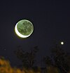

conjunction

Definition: In astronomy, a conjunction occurs when two astronomical objects or spacecraft have either the same right ascension or the same ecliptic longitude, usually as observed from Earth.When two objects always appear close to the ecliptic—such as two planets, the Moon and a planet, or the Sun and a planet—this fact implies an apparent close approach between the objects as seen in the sky. A related word, appulse, is the minimum apparent separation in the sky of two astronomical objects.Conjunctions involve either two objects in the Solar System or one object in the Solar System and a more distant object, such as a star. A conjunction is an apparent phenomenon caused by the observer's perspective: the two objects involved are not actually close to one another in space. Conjunctions between two bright objects close to the ecliptic, such as two bright planets, can be seen with the naked eye.
Source: Wikipedia
Wikipedia Page (Something wrong with this association? Let us know.)
Wikidata Page (Something wrong with this association? Let us know.)